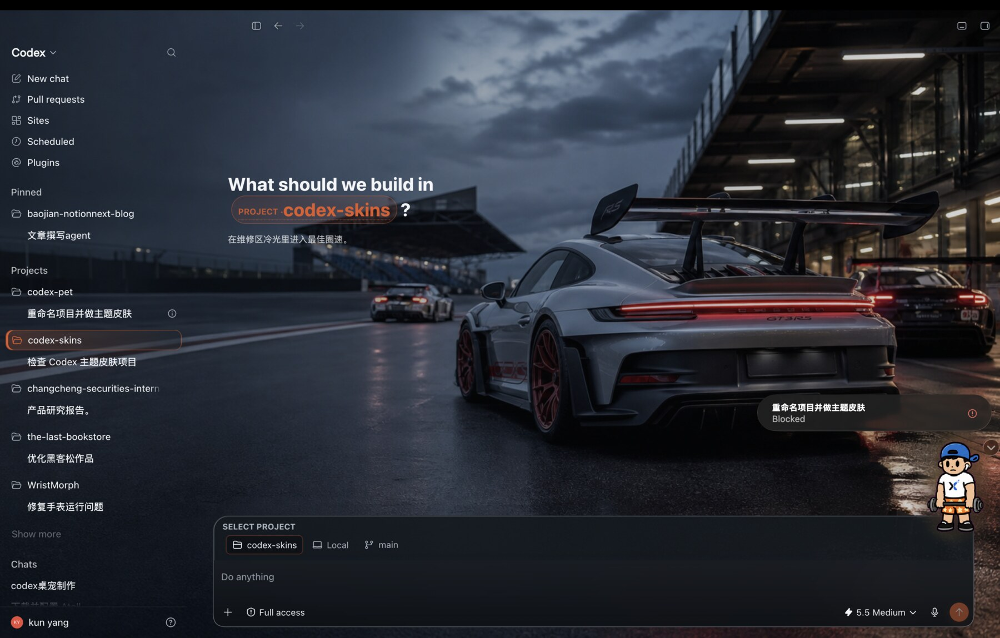
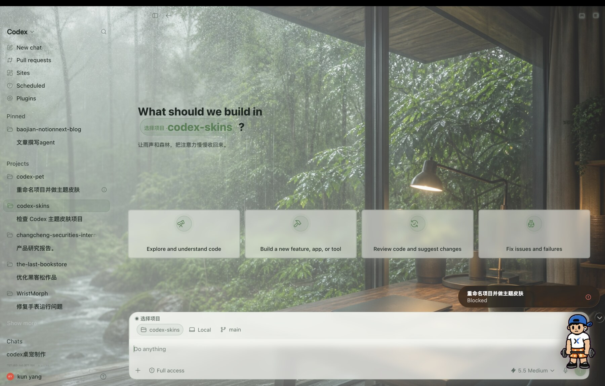
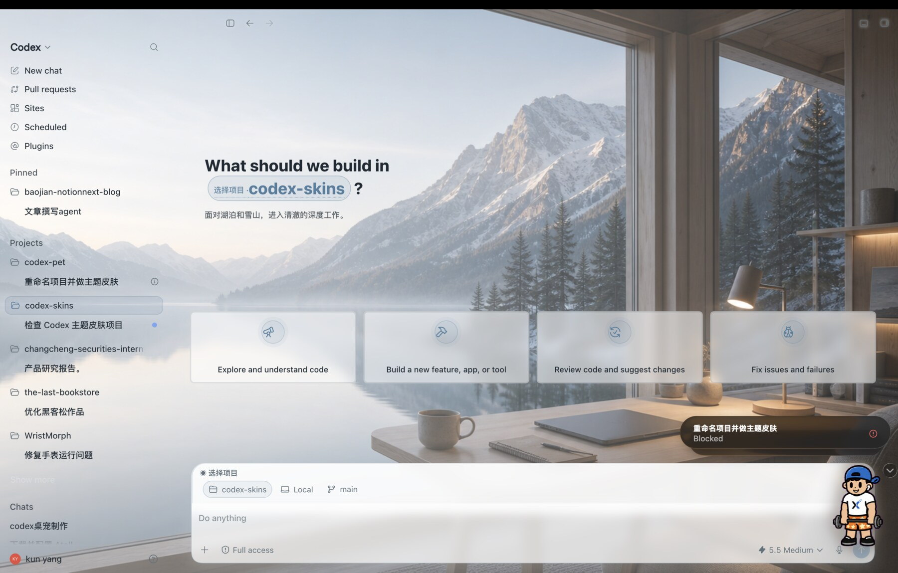

MAKE CODEX FEEL LIKE YOURS
Codex Theme Creator
把一句想法或一张参考图，变成一套能保存、微调和随时切换的 Codex 主题。
适用于 Apple 芯片 Mac 与已安装的 Codex Desktop。Windows 测试版现已提供。累计下载 正在读取不是下载几张固定壁纸。
是让你的 Codex，拥有自己的视觉世界。
01
下载并打开
把 App 放进“应用程序”，第一次启动会自动准备好创作助手。
02
告诉 Codex 想要什么
描述风格，或直接发一张参考图。Codex 会按主题包格式完成创作。
03
在 App 里管理
新主题自动出现。你可以预览、微调、切换，或导出分享给朋友。


AVAILABLE NOW
macOS
Apple 芯片 Mac。主题库、创作助手、预览、微调、导入导出和菜单栏快捷切换均已提供。
下载 Beta首次出现 Apple 提示时：系统设置 → 隐私与安全性 → 仍要打开。查看图文步骤WINDOWS TEST BUILD
Windows
首次 Windows 测试版，包含主题库、创作助手、导入导出和系统托盘。请在安装后验证切换、微调、导入、导出和恢复默认外观。
Windows 虚拟机通常请选择 ARM64；普通 Intel/AMD Windows 电脑请选择 x64。提交测试反馈先把体验做好，再扩展平台。
当前 Beta 建议将 Codex 设为深色外观。它是非官方开源项目，不修改 Codex 应用本体；主题、图片和你的创作内容都保存在本机。